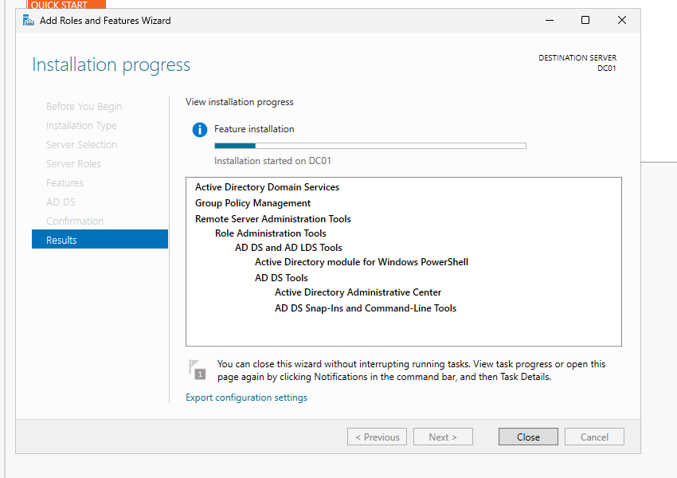
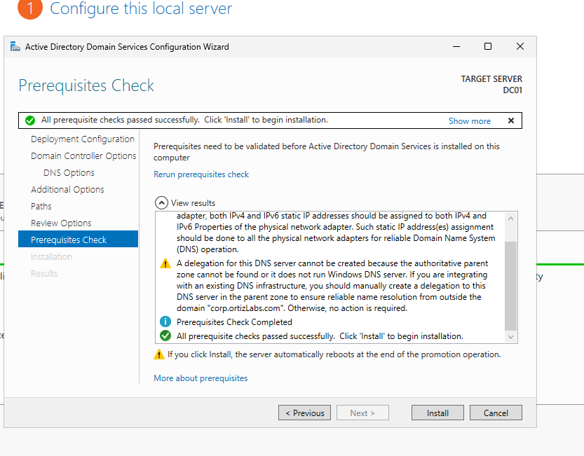
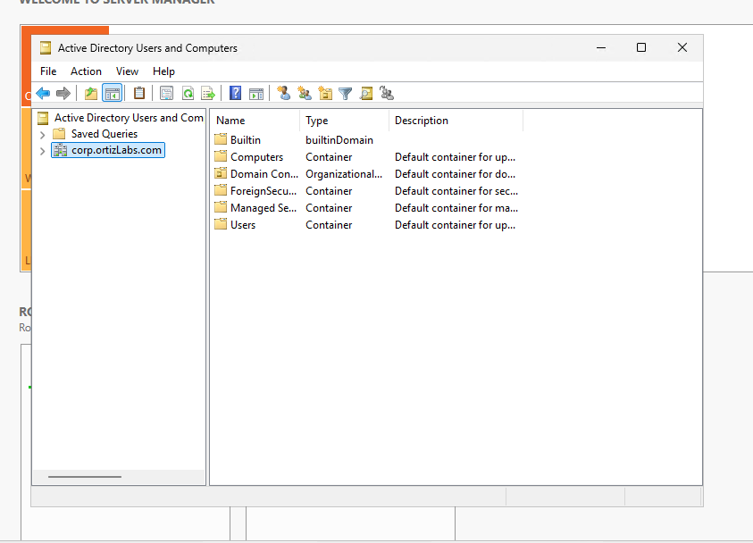

Active Directory Enterprise Lab
A hands-on Windows Server lab designed to simulate Active Directory administration in a small enterprise environment.
Project Overview
I built a virtualized Windows domain environment to gain hands-on experience with Windows Server and Active Directory administration.
I configured a Windows Server domain controller named DC01, installed Active Directory Domain Services, and created the corp.ortizLabs.com domain.
I then created an organizational structure designed to simulate how users, departments, servers, and groups would be organized in a business environment.
Installing Active Directory Domain Services
I installed the Active Directory Domain Services role on DC01. The installation also included Group Policy Management, Remote Server Administration Tools, and the Active Directory PowerShell module.

Configuring the Domain Controller
After installing Active Directory Domain Services, I configured DC01 as a domain controller. Windows Server performed its prerequisite checks before completing the domain controller installation.

Creating the Active Directory Domain
After configuring the domain controller, I verified the new domain through Active Directory Users and Computers. The lab uses the corp.ortizLabs.com domain.

Creating Organizational Units
I created organizational units to represent a realistic company structure. Employee departments included IT, HR, Accounting, Sales, and Management, with additional organizational units for servers and groups.

Skills Demonstrated
- Windows Server role installation and configuration
- Active Directory Domain Services deployment
- Domain controller configuration
- Active Directory Users and Computers administration
- Organizational Unit design
- Windows domain administration fundamentals